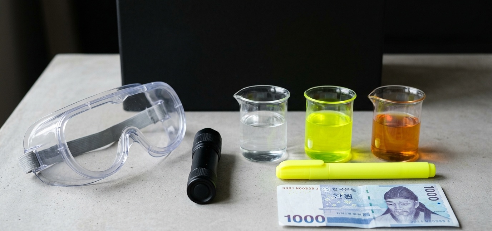
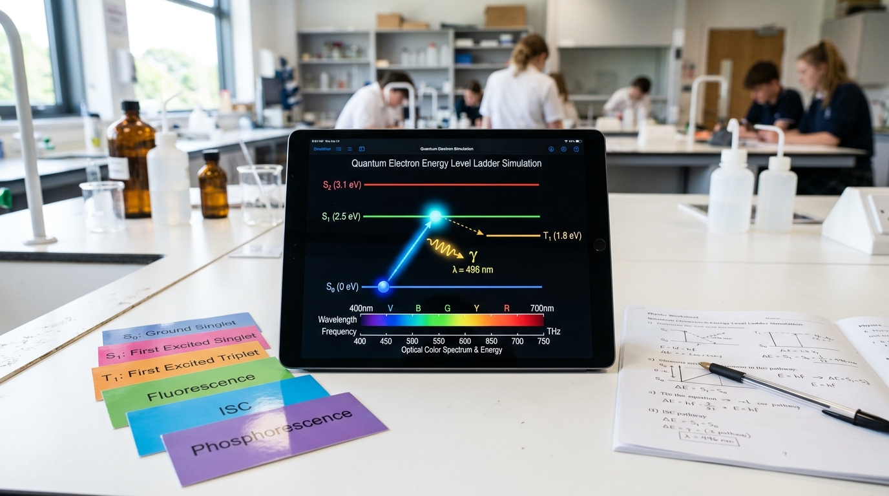
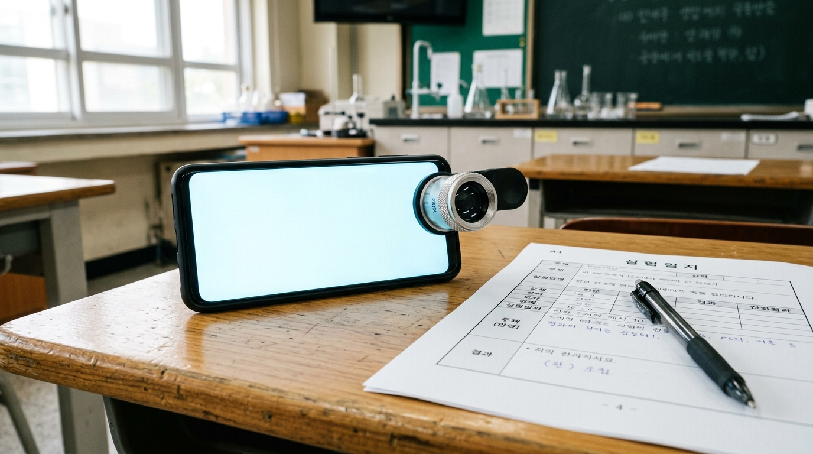
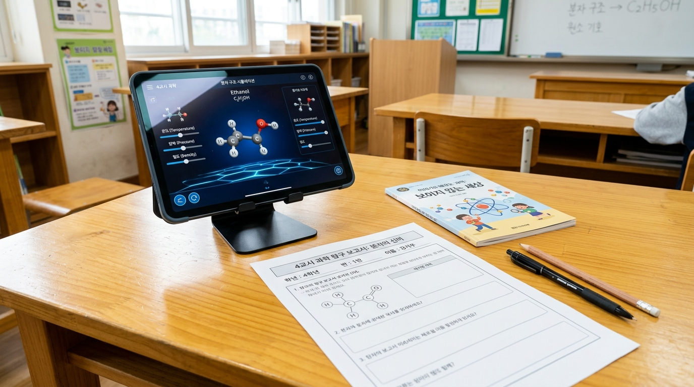

1장. 어둠 속에서 빛나는 마법, 형광의 정체
보이지 않는 자외선을 흡수해 아름다운 가시광선으로 내뿜는 유기 분자의 비밀
비밀은 음료 속에 녹아 있는 유기 분자입니다. 토닉워터 속에는 '퀴닌(Quinine)' 분자가, 비타민 음료 속에는 '리보플라빈(비타민 B₂)' 분자가 들어 있습니다.
이 분자들은 눈에 보이지 않는 고에너지 자외선(파장 300~400nm)을 흡수한 뒤, 사람의 눈으로 볼 수 있는 부드러운 가시광선(400~700nm)으로 바꾸어 방출합니다. 이 현상을 과학에서는 '형광(Fluorescence)'이라고 부릅니다.

가시광선보다 파장이 짧아 눈에 보이지 않지만, 광자의 에너지가 강력하여 물질 속 전자를 들뜨게 만듭니다.
물질이 높은 에너지를 흡수한 뒤, 약 1억 분의 1초 만에 가시광선 빛을 내뿜고 원래대로 복귀하는 현상입니다.
탄소 고리 구조를 통해 빛 에너지를 효율적으로 흡수하고 가시광선 형광으로 재방출하는 유기 화합물입니다.
2장. 꼬마 전자의 트램펄린 점프와 사라진 에너지
들뜬 상태에서 부르르 떨며 열을 흘리는 꼬마 전자의 비밀
전자가 강한 자외선 광자를 흡수하면 트램펄린을 탄 것처럼 높은 층인 '들뜬 상태(Excited State)'로 뛰어오릅니다.
하지만 들뜬 상태는 매우 불안정하므로, 전자는 온몸을 부르르 떨며(분자 진동) 흡수한 에너지의 일부를 '열(Heat)'로 방출합니다.
열을 흘린 뒤 1층 바닥 상태로 내려오며 남은 에너지를 빛으로 방출하는데, 처음보다 에너지가 줄어들었기 때문에 파장이 길어진 가시광선 형광이 됩니다. 이를 '스토크스 이동(Stokes Shift)'이라 하며, [흡수 자외선] = [방출 빛] + [흘린 열]의 에너지 보존 법칙이 성립합니다.

전자가 가장 낮은 에너지를 지닌 안정한 상태를 '바닥 상태', 에너지를 얻어 높은 층으로 전이한 불안정한 상태를 '들뜬 상태'라 합니다.
들뜬 상태에서 분자 진동열로 에너지를 잃어 방출되는 빛의 파장이 흡수한 파장보다 길어지는 현상입니다.
흡수된 총 자외선 에너지는 방출된 빛 에너지와 손실된 열에너지의 합과 정확히 일치합니다.
3장. 팽이 스핀의 비밀과 스마트폰 OLED의 75% 배터리 도둑
빛을 내지 못하고 열만 뿜어내는 삼중항 전자의 함정
전자는 팽이처럼 회전하는 '스핀(Spin)'이라는 양자역학적 성질을 가집니다. 전기로 분자를 들뜨게 하면 두 가지 스핀 조합이 만들어집니다:
- 단일항 (Singlet, 25%): 반대 방향 스핀(↑↓). 1억 분의 1초 만에 빛을 내뿜습니다.
- 삼중항 (Triplet, 75%): 같은 방향 스핀(↑↑). 규칙상 1층 전이가 금지되어 빛을 내지 못하고 갇힙니다.
주입된 전기의 75%가 빛 대신 열로 버려지며 스마트폰을 뜨겁게 달구는 배터리 낭비(75% 배터리 도둑)가 일어납니다.

전류를 흘리면 스스로 빛을 발하는 얇고 유연한 차세대 유기 디스플레이 소자입니다.
전자가 자전하며 작은 자석처럼 행동하는 양자역학 고유의 각운동량 상태입니다.
전기 주입 시 양자 통계에 의해 단일항(발광)은 25%, 삼중항(전이 금지, 열 방출)은 75%의 비율로 발생합니다.
4장. KAIST의 75% 구출 작전과 미래의 청색 OLED 분자 디자이너
컴퓨터 시뮬레이션으로 삼중항 비상문을 열어 100% 발광을 이뤄내다
연구팀은 갇혀 있던 삼중항 전자가 열을 잃기 전에 단일항으로 빠르게 건너갈 수 있는 초고속 구름다리 우회로인 '핫 엑시톤(Hot Exciton)' 메커니즘을 분자 내에 설계했습니다.
또한 주변의 미세한 열에너지를 흡수해 단일항으로 전이시키는 TADF(열활성 지연형광) 기술을 결합하여, 버려지던 75%의 삼중항을 모두 빛으로 바꾸며 100% 발광 효율을 달성했습니다.
이 기술은 에너지가 높아 쉽게 깨지던 청색(Blue) OLED의 수명과 전력 효율을 비약적으로 끌어올리는 세계적 핵심 원천 기술입니다.

고에너지 들뜬 삼중항 상태에서 열을 잃기 전에 단일항으로 초고속 역계간교차를 통해 건너가게 만드는 기술입니다.
단일항과 삼중항의 에너지 차이를 최소화하여, 상온의 열에너지만으로도 삼중항을 단일항으로 되돌려 빛을 내게 하는 기술입니다.
빛의 삼원색 중 에너지가 가장 높아 분자 수명이 짧았던 청색 발광층의 내구성을 극복하는 핵심 연구 과제입니다.